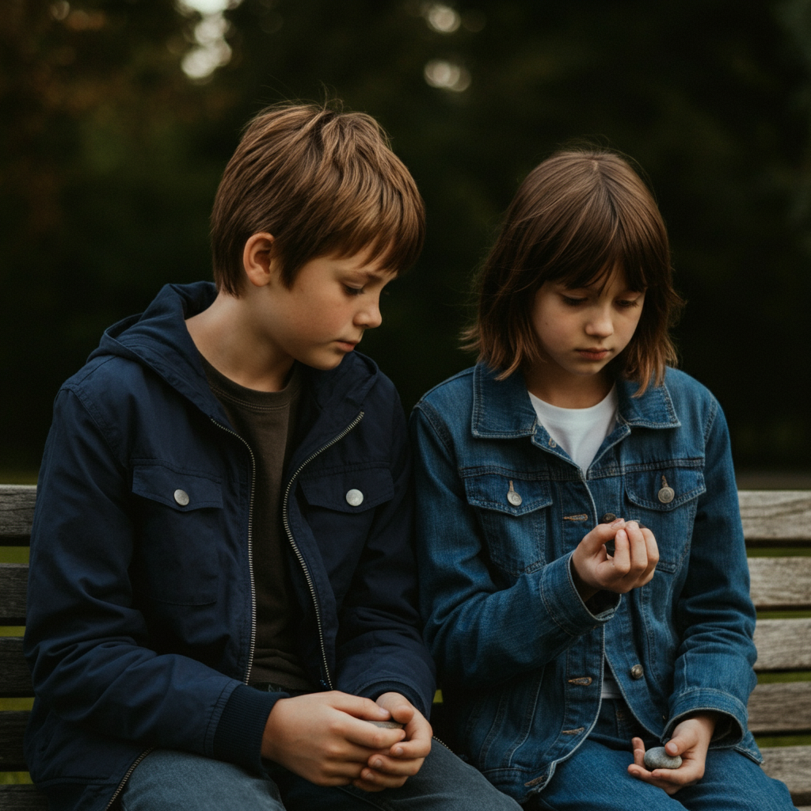

Complete the quiz to uncover how you connect with others!
As you take this quiz, consider the following:
Enjoy the quiz!
Your quiz results are not shared with anyone unless you choose to do so. The website doesn't save any responses; it is simply to help you understand your love language and relationships.
At the end of the quiz, you will be able to download your results or share them with your loved ones to enhance your relationship.